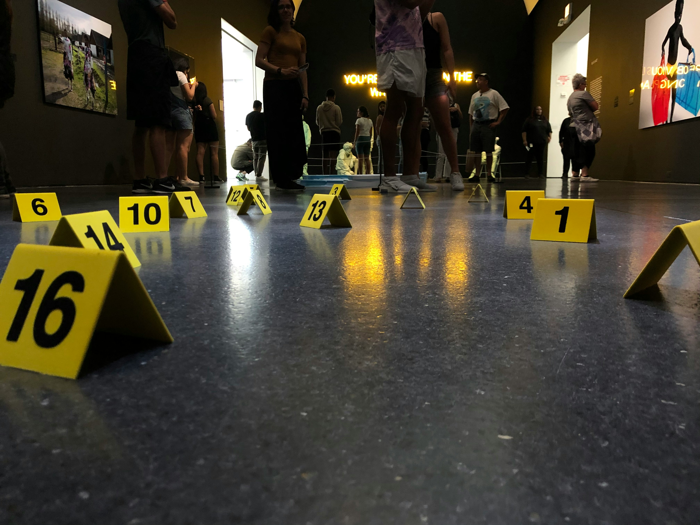
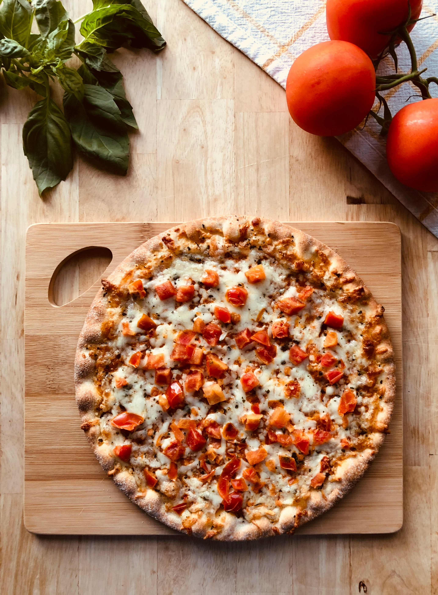
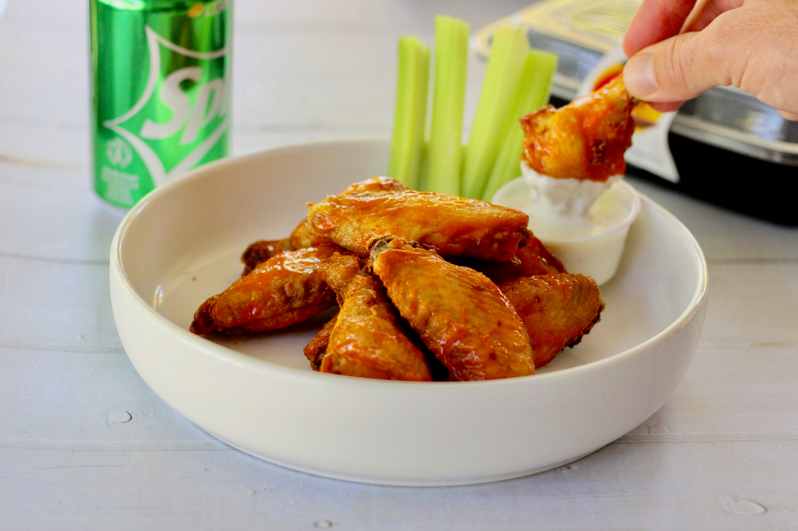
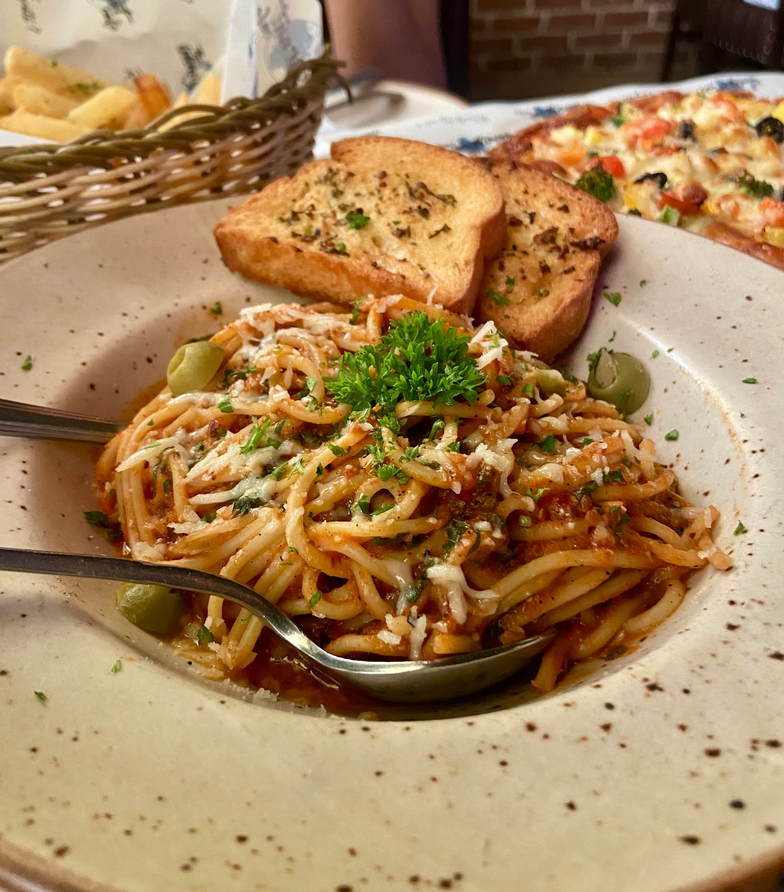
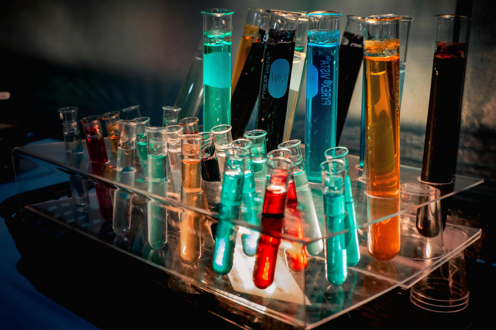

Proceed to the descriptions of what the victim usually ate at each restaurant. You will be testing the victim's stomach contents to determine which restaurant to investigate. Read each description of the victim's food and determine what macromolecules are in each meal. Read the tests to complete in the Macromolecule academy and go to the lab and perform the tests. Once you get your result for the unkown sample, you can determine what was present in the stomach and where the victimn ate his last meal.

Unknown stomach contents recovered for testing.You must perform multiple macromolecule tests to determine what the contents of the stomach reveal. This will lead investigators to determine which restaurant he visited before death.
The victim would never eat thin crust pizza from anywhere else! The victim would typically order a pizza with sausage, ,pepperoni, and bacon.
The victim would hang out here to watch sporting events while feastin on Blazin' wings and celery.
The victim loved to go here for a night of bread, olive oil, and pasta.Before analyzing evidence, detectives must learn how scientists identify macromolecules in food samples.
Carbohydrates provide quick energy.Foods include bread, pasta, rice,potatoes, and sugars.
Proteins help build and repair cells.Foods include meat, eggs, beans,nuts, and dairy products.
Biuret Solution detects proteins.
Lipids store energy and are found in oils, butter, fats, and many animal products.
Sudan III detects lipids.
Which reagent tests for starch?

Drag a sample and a reagent into the test tube to run the test.
| Test | Positive Appearance |
|---|---|
| Lipid | |
| Protein | |
| Glucose | |
| Starch |
| Test | Observed Color | Your Interpretation |
|---|---|---|
| Lipid | ||
| Protein | ||
| Glucose | ||
| Starch |